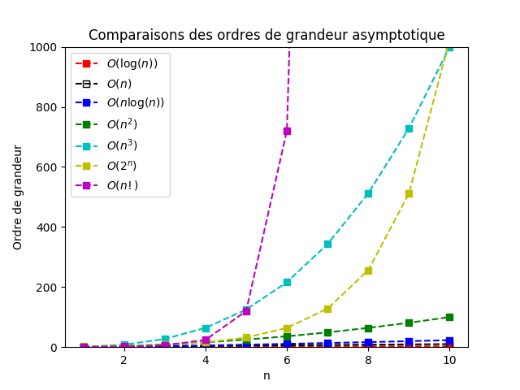

Preuve de programme ⇧
Exécuter l'algorithme sur quelques cas ne permet pas de valider qu'il effectue correctement ce qui est attendu de lui.
Il faut donc pouvoir utiliser un système de preuve de programme.
Illustration avec l'algorithme de gonflage de ballon.
Algorithme gonflerBallon(ballon)
Entrée : ballon
Sortie : Ø
Effet de bord : A la fin de l'algorithme, le ballon est gonflé.
Début
Tant que ballon non gonflé faire
soufflerDans(ballon)
FinTantQue
FinFace à un algorithme, il faut se poser et répondre à 3 questions :
- Est-ce-qu’il donne un résultat ? S'arrête-t-il ?
- Est-ce-qu’il donne le résultat attendu ? ou bien est-ce-qu’il calcule n’importe quoi ?
- Est-ce-qu’il donne le résultat en un temps raisonnable ? ou bien est-ce-qu’il faut attendre plusieurs siècles ?
Terminaison
Un algorithme termine si l'ensemble de ses instructions terminent.
Est-ce que l'algorithme suivant termine ? Est-ce qu'il est correct ?
Algorithme fois2(x)
Entrée : x, entier
Sortie : entier, correspondant à 2 * x
Début
resultat ← 2 * x
Renvoyer resultat
FinLe nombre d’instructions à effectuer est connu à l’avance. L'algorithme est composé de 3 opérations élémentaires (*, ← et un renvoi) qui terminent.
Est-ce que l'algorithme suivant termine ?
Algorithme ageHumain(x)
Entrée : x, entier
Sortie : entier, correspondant à l'age animal
Début
Si x ≥ 19 alors
y <- 10 * x − 90
Sinon
Si x ≥ 17 alors
y <- 6 * x − 14
Sinon
Si x ≥ 2 alors
y <- 4 * x + 20
Sinon
y <- 8 * x + 12
FinSi
FinSi
FinSi
Renvoyer y
FinL'algorithme n'est composé que d'opérations élémentaires qui terminent.
Est-ce que l'algorithme suivant termine ?
Algorithme somme(n)
Début
s <- 0
Pour i de 1 à n faire
s <- s + i
FinPour
Renvoyer s
FinIl y a une boucle, mais le nombre de passages dans la boucle est connu a priori. Donc l’algorithme se termine toujours.
Est-ce que l'algorithme suivant termine ?
Algorithme mystere(x)
Début
FinComment déterminer qu'un algorithme termine ?
On peut voir, par le biais des exemples ci-dessous, qu'en lisant la suite des instructions, nous avons l'intuition que les algorithmes terminent.
Pour des algorithmes avec plus d'instructions, il nous faut un moyen formel de prouver la terminaison d'un algorithme.
Toute suite d’entiers naturels strictement décroissante est finie.
Il n’existe pas de suite infinie d'entiers naturels strictement décroissante.
Pour prouver la terminaison d'un algorithme, il suffit de trouver un entier naturel strictement décroissant pendant l'exécution de l'algorithme.
Cet entier est appelé variant de boucle. Pour identifier si une boucle se termine effectivement, il faut :
- identifier le variant de boucle et vérifier qu’il est positif,
- vérifier qu’il décroît effectivement et strictement à chaque itération,
- Dans le cas contraire, on rencontre une boucle infinie.
Existe-t-il un algorithme qui permet de dire si un algorithme termine ?

Alan Turing en 1936 a prouvé que le problème de l'arrêt est indécidable, c'est-à-dire qu'il n'existe pas de programme informatique qui prend comme entrée une description d'un programme informatique avec toutes ses entrées et qui, grâce à la seule analyse de ce code, répond VRAI si le programme s'arrête sur son paramètre et FAUX sinon.
Complexité
Définition
- Combien de temps prend un algorithme pour s'exécuter ?
- Quelle quantité de mémoire utilise-t-il au cours de son exécution ?
La notion de complexité d'un algorithme va permettre de répondre à ces 2 questions.
La complexité d'un algorithme c'est une mesure d'efficacité (temporelle et spatiale) qui permet de comparer des algorithmes solutionnant le même problème.
On dira qu'un algorithme A est plus efficace en temps qu'un algorithme B, si sa complexité en temps est moindre que celui de l'algorithme B.
Nous nous intéresserons uniquement à la complexité en temps.
Comment calculer la complexité ?
Une mesure naturelle de la complexité d'un algorithme serait d'exécuter l'algorithme et calculer le temps d'exécution réel. Il s'agit d'une très mauvaise mesure. En effet, elle dépend de beaucoup de paramètres : le compilateur, le langage de programmation, la machine,...
C'est pourquoi la mesure de complexité utilisée est le nombre d'opérations de l'algorithme. Cette mesure a l'avantage d'être indépendante de la machine et du langage, et d'être évaluable sur le papier.
Soit un tableau $T$ un tableau d'entiers et $x$, un entier. Ci dessous, l'algorithme est_present qui détermine si $x$ est présent dans $T$.
Algorithme est_present(T, x)
Entrée :
Sortie :
Début
present ← FAUX
n ← taille(T)
Pour i variant de 0 à n
Si T[i] = x alors
present ← VRAI
FinSi
FinPour
Renvoyer present
FinCalculer le nombre d'opérations executées par l'algorithme est_present.
On se rend compte que le nombre d'opérations dépend :
- du nombre d'opérations de l'algorithme Taille,
- des différents cas renvoyés par l'algorithme,
- de la taille du tableau $T$
Cas 1 : $x$ n'est pas présent dans $T$
Algorithme est_present(T, x)
Entrée :
Sortie :
Début
present ← FAUX # 1 opération
n ← taille(T) # 1 opération*
Pour i variant de 0 à n - 1 # n opérations
Si T[i] = x alors # 2 * n opérations
present ← VRAI
FinSi
FinPour
Renvoyer present # 1 opération
FinLe nombre total d'opérations $= 1 + 1 + 3 \times n + 1 = 3n + 3$
Cas 2 : $x$ est présent dans $T$
Algorithme est_present(T, x)
Entrée :
Sortie :
Début
present ← FAUX # 1 opération
n ← taille(T) # 1 opération*
Pour i variant de 0 à n - 1 # n opérations
Si T[i] = x alors # 2 * n opérations
present ← VRAI # 1 opération
FinSi
FinPour
Renvoyer present # 1 opération
FinLe nombre total d'opérations $= 1 + 1 + 3 \times n + 1 + 1 = 3n + 4$, ce, quelque ce soit la position de $x$ dans $T$
Nous venons de voir que la complexité dépend de la taille du tableau $T$, plus le tableau est grand et plus le nombre d'opérations à effectuer est important.
Pour effectuer des comparaisons entre plusieurs algorithmes, nous allons raisonner sur des tableaux de grande taille, car plus les tableaux sont grands et plus les différences entre les algorithmes seront flagrantes.
Pour comparer des algorithmes, nous allons donc uniquement nous intéresser à ce que l'on appelle "l'ordre de grandeur asymptotique"
Ordre de grandeur asymptotique
C'est une échelle de référence, qui considère les cas où l'ensemble des données en jeu est très grand.
On note cet ordre de grandeur avec un $\mathcal{O}$ majuscule.
En reprenant l'exemple de l'algorithme est_present, le nombre de comparaisons calculé est $3n + 4$.
Ce qui correspond à un ordre de grandeur asymptotique en $\mathcal{O}(n)$
Pour obtenir l'ordre de grandeur à partir d'un polynome :
- Supprimer les constantes
- Garder uniquement le $n$ qui possède l'exposant le plus grand
- Supprimer le coefficient devant le $n$
Exemples :
$$3n + 4 \Rightarrow {\color{red}\cancel{3}} n + {\color{red}\cancel{4}} \Rightarrow \mathcal{O}(n)$$
$$6n^2 + 3n + 5 \Rightarrow {\color{red}\cancel{6}} n^2 + {\color{red}\cancel{3n}} + {\color{red}\cancel{5}} \Rightarrow \mathcal{O}(n^2)$$
1. Écrire une version de l'algorithme est_present avec une boucle while, qui permet de déterminer si $x$ est présent dans le tableau $T$ et renvoyer cette information dès que l'algorithme trouve sa présence.
2. Déterminer la complexité de cet algorithme dans le meilleur et le pire des cas.
1. Écrire un algorithme permettant de trouver le plus grand entier présent dans un tableau. Vous ferez "tourner à la main" votre algorithme en utilisant le tableau t = [3,5,1,8,4,2].
2. Déterminer la complexité de cet algorithme.

Voici un tableau dans lequel le temps de calcul de différentes complexités algorithmiques est présenté, en fonction de la taille des données.
| $n = 1$ | $n = 10$ | $n = 100$ | $n = 1000$ | $n = 1000000$ | |
|---|---|---|---|---|---|
| $\mathcal{O}(1)$ | 1 µs | 1 µs | 1 µs | 1 µs | 1 µs |
| $\mathcal{O}(\log{}n)$ | 1 µs | 4 µs | 7 µs | 10 µs | 20 µs |
| $\mathcal{O}(n)$ | 1 µs | 10 µs | 100 µs | 1 ms | 1 s |
| $\mathcal{O}(n\log{}n)$ | 1 µs | 4 µs | 700 µs | 10 ms | 20 s |
| $\mathcal{O}(n^2)$ | 1 µs | 100 µs | 10 ms | 1 s | 11.57 jours |
| $\mathcal{O}(n^3)$ | 1 µs | 1 ms | 1 s | 16.67 min | 31709 ans |
| $\mathcal{O}(2^n)$ | 2 µs | 1.024 ms | 401969368413314 siècles | - | - |
| $\mathcal{O}(n!)$ | 1 µs | 3.62 s | 2.9e+142 siècles | - | - |